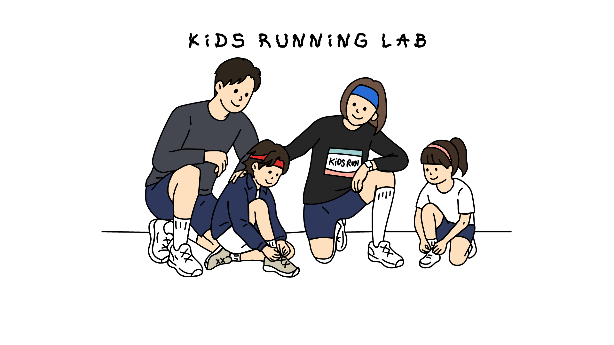

쉬어가는 찻자리 '연차'의 다섯 번째 시간이에요.
이번엔 아이들과 함께 달리는 〈키즈러닝〉 엄마들과 함께해요.

아이들과 함께 달리는 키즈러닝 커뮤니티에서 제안이 왔어요. 아이를 등원·등교시키고 난 뒤, 엄마들 스스로 돌보는 시간을 보내고 싶으시다고요. 기왕 시간 내는 거, 평소에 많이 하는 육아 이야기 말고 이번엔 조금 다른 이야기를 함께 나눠봐요.
변화하는 세상 이야기, AI 이야기,
그리고 그 안에서 우리 아이들에게 무엇을 줄 수 있는지.
따뜻한 차 한 잔과 함께 그 대화를 나눠보면 어떨까요?
"엄마들의 시간도 갖고, 변화하는 세상에 대해서도 함께 이야기 나누고 싶어요."
잠깐, 만남에 앞서 아래 영상 중 하나를 보고 와주세요 :)
영상 ①
영상 ②
차, 달리기, AI — 겉으로는 전혀 달라 보이는 세 가지죠? 그런데 깊이 들여다보니 공통점이 보이더라고요. "시간이 걸려요. 끈기가 필요해요. 과정이 있어요."
차나무를 키워 차를 만들고, 물을 끓여 온도를 맞추고, 우러나길 기다리고, 음미해요. 마시는 방법은 중요하지 않아요. 과정 자체로 충분하답니다.
기다림 · 과정첫날부터 빠르게 달릴 수는 없잖아요. 매일 조금씩 쌓이는 것들이 결국 변화를 만들어 냅니다. 아이와 함께 달린다는 건, 그 과정을 나란히 걷는 게 아닐까요?
지속 · 루틴AI를 학습시킬 때엔 목적지만 알려줘요. 목적지까지 도달하는 길에 어떤 장애물이 있는지는 알려주지 않죠. 스스로 부딪히며 익혀가요. 아이가 자라는 방식과 놀랍도록 닮아 있어요.
탐색 · 자율기술의 궁극적인 목적은 '일반화'라고 생각합니다. AI는 바둑이나 체스처럼 수가 무한히 많은 게임을 통해 학습해왔어요. 목적지만 주고, 스스로 길을 찾게 해요.
우리 아이들은 어떻게 커가고 있나요?
AI가 많은 것을 대신해주는 세상에서,
우리가 아이들에게 남겨줄 수 있는 건 무엇일지 함께 이야기 나눠보아요 🫶
쉬어가는 찻자리 '연차'는 회차마다 매번 조금씩 달라져 왔어요. 함께하는 분들, 그리고 계절의 온도를 담아 그때그때 새로운 이야기를 담았어요.
선하 작가님이 직접 카메라로 담은 식물 사진을 일상의 쓰임들로 채워낸 공간이에요. 식물의 시간을 스냅샷으로, 자연이 화면 속으로 쏙 들어왔어요. 힙하고 시끌벅적한 을지로 가운데, 잠깐 호흡 고르고 가기 알맞은 자리예요.
지금은 '저는 여름에 있습니다'라는 팝업도 진행 중이에요. 카인드오브썸머의 썸머(Summer)가 여름인 것처럼, 6월은 아직 여름이 오기 전 — 여름을 기다리는, 먼저 온 계절이에요.
"멈춤과 연결됨. 달리다가 잠깐 서는 것처럼, 차를 우리면서 기다리는 것처럼."
누군가에겐 멀게 느껴지는 차🍵이지만, 차와 함께하는 순간을 많은 분들에게 전하고 있어요. 저와 함께 하는 찻자리가 새로운 경험이 되실 수 있도록 만들어 갈게요.
AI를 주제로 찻자리를 만들어 갈 수 있을지 고민을 많이 했는데요. 차와 달리기, AI의 공통점을 보며 장르를 넘나드는 이야기의 장이 될 것 같아서 기대가 되더라고요 :)
참고로, 이공계 출신으로 기술의 최전선에서 오래 있기도 했어요. 대기업에서 휴대폰을 개발했던 경험, 신사업 추진을 생명과학 분야로 검토했던 경험이 있답니다.
아이와 함께 궤적을 쌓아가는 키즈러닝 엄마들과 함께,
차 한 잔 하며 변화하는 세상에 대한 이야기를 함께 나누고 싶어요.
차도, AI도 몰라도 괜찮아요. 함께 도란도란 생각을 나눠요 :)
일시 · 6월 17일 수요일 오전 10:30
장소 · 카인드오브썸머, 을지로3가역
서울 중구 마른내로 40, 3층
문의 · 인스타그램 @tea.ara_flows